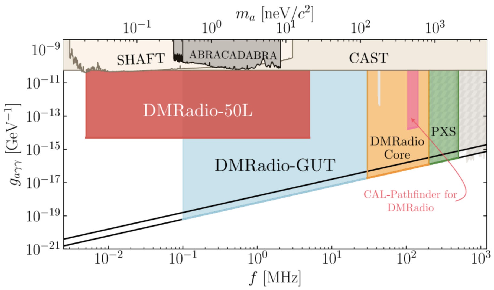

Dark Matter Radio
The identity of dark matter remains a central open question in fundamental physics. The Irwin group searches for light bosonic dark matter, which can behave as a coherent, oscillating field. A particularly well-motivated candidate is the QCD axion, predicted by the Peccei–Quinn mechanism to resolve the strong CP problem: the unexplained suppression of CP violation in the strong interaction. Axions produced in the early universe could also account for the observed dark matter.
The Dark Matter Radio (DMRadio) program uses tunable resonant circuits and ultrasensitive superconducting sensors to search for axion dark matter. In a magnetic field, axions would produce a weak electromagnetic response, described as an effective oscillating current, at a frequency set by the axion mass. Much like an AM radio tuning between stations, DMRadio scans frequencies to search across a range of possible masses.

DMRadio-50L, located in Stanford’s Physics and Astrophysics Building, searches at 5 kHz–5 MHz, corresponding to axion masses of about 20 peV/c²–20 neV/c². A superconducting sheath around a 1 T, 50-liter toroidal magnet couples the axion signal to a tunable, high-Q superconducting LC resonator, and a custom hybrid cryogenic system cools the detector to 50 mK to suppress thermal noise. Initial readout uses dc SQUIDs; later runs will test quantum sensors designed to surpass the Standard Quantum Limit, including Radio-frequency Quantum Upconverters.
DMRadio-Core is a proposed experiment targeting QCD axions at 70–140 MHz (about 290–580 neV/c²), with possible extensions to 30–200 MHz. It uses a narrow-bore, segmented solenoid with superconducting pickups in the low-field region outside the magnet. Separating the pickups from the magnet bore gives sensitivity comparable to the previously proposed DMRadio-m³ with roughly one-tenth the stored magnetic energy, offering both a near-term QCD axion search and a scalable magnet design for DMRadio-GUT.
DMRadio-GUT is a proposed future experiment targeting QCD axions tied to physics near the grand unification scale. It plans to search at 100 kHz–30 MHz (about 0.4–120 neV/c²), with sensitivity reaching the axion–photon couplings predicted by the DFSZ model. These low masses probe energy scales far beyond the reach of accelerators. Reaching this sensitivity will require strong magnets, high-Q resonators, and quantum readout beyond the Standard Quantum Limit; DMRadio-50L’s sensor development and DMRadio-Core’s magnet geometry provide a staged path toward this.
For more information about the experiments, collaboration, and latest developments, visit the DMRadio collaboration website.